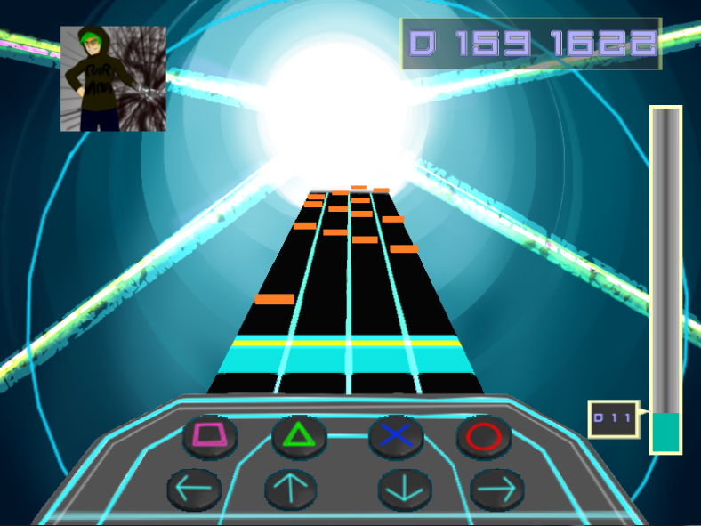
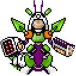

Shoot the MUSIC!!

- 
ゲーム内容
ジャンル：音楽
プレイ人数：1人
プレイ時間：1プレイ 3~5分
リリース：2013年
音楽に合わせて的を撃ち落とせ！
現役の音屋が全員楽曲提供！現役の絵師が(ほぼ)全員ジャケット絵を提供！
音楽に合わせて画面の奥から飛んでくる的を、ボタンを押して消していくゲームです。音楽ゲーム好きの部員が協力して、ゲーム内の譜面を作りました。難易度も各曲3段階から選べるので、音楽ゲーム初心者でも安心してプレイ出来ます。
スペシャルサンクス：daisan(OB)
制作スタッフ
|
|
|
|
|
|
|---|---|---|---|---|
| det_U | airly | mtrk | postino | popo |
| プログラマー | 絵師 | 音屋 | 音屋 | 音屋 |
|
|
|
 | ||
|---|---|---|---|---|
| eleder | fuji | lagico | meumeu | rekku |
| 絵師/音屋/譜面提供 | 譜面提供 | 絵師 | 音屋 | 音屋 |
|
|
|
|
||
|---|---|---|---|---|
| agne | gula | Tahawas | yuzu | hmhm |
| 譜面提供 | 音屋 | 音屋 | 音屋 | 音屋 |
|
|
|
||
|---|---|---|---|
| pochi | nobu | evifry | penne |
| 絵師 | 絵師 | 絵師 | 絵師 |